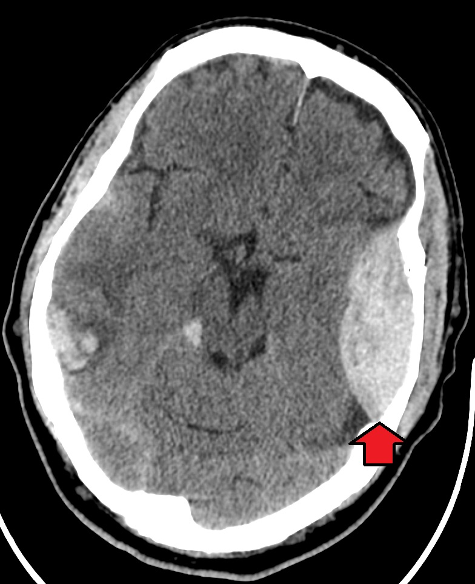

Ficha del catálogo
Hematoma epidural
- Sistema
- Nervioso
- Modalidad
- TC
- Región
- Espacio epidural craneal, región temporoparietal
- Dificultad
- Básico
El hematoma epidural es la acumulación de sangre entre la tabla interna del cráneo y la duramadre, casi siempre por traumatismo con fractura y lesión de la arteria meníngea media. Es más frecuente en pacientes jóvenes y puede presentar un intervalo lúcido antes del deterioro neurológico. Constituye una urgencia neuroquirúrgica cuando alcanza volumen significativo.
Técnica
Tomografía de cráneo sin contraste con reconstrucciones en ventana de parénquima y ventana ósea para identificar trazos de fractura. Se revisa el estudio en los tres planos para valorar colecciones de la fosa posterior y del vértex.
Qué observar
- Colección biconvexa que no cruza las suturas
- Fractura craneal suprayacente en ventana ósea
- Focos hipodensos internos que indican sangrado activo
- Extensión a través de la hoz o del tentorio, posible en el epidural
- Desviación de línea media y compresión cisternal
- Lesiones parenquimatosas asociadas por contragolpe
Hallazgos
Colección extraaxial hiperdensa de morfología biconvexa o lenticular, de bordes bien definidos, limitada por las suturas craneales. Con frecuencia se acompaña de fractura en el hueso adyacente. La presencia de áreas hipodensas dentro de la colección hiperdensa indica sangre no coagulada y sangrado activo, un dato de mal pronóstico que obliga a una actitud urgente.
Perlas
La distinción clave con el hematoma subdural es anatómica: La duramadre está firmemente adherida a las suturas, por lo que el epidural las respeta pero sí puede cruzar los repliegues durales, mientras que el subdural cruza suturas pero no atraviesa la hoz ni el tentorio. Un volumen inicial pequeño puede crecer con rapidez, de modo que el control tomográfico precoz es obligado.
Diagnóstico diferencial
- Hematoma subdural agudo
- Forma en semiluna, cruza suturas, no limitado por ellas, y sigue la superficie del hemisferio.
- Meningioma en placa con hemorragia
- Contexto no traumático, con hiperostosis y realce intenso tras el contraste.
- Hematoma subgaleal o cefalohematoma
- Se sitúa por fuera de la tabla externa, en el plano de partes blandas.
- Empiema epidural
- Antecedente de sinusitis u otomastoiditis, realce periférico y restricción a la difusión.
Simuladores
- Seno venoso dural prominente o lago venoso adyacente a la tabla interna
- Artefacto por movimiento que simula una colección marginal
- Hemorragia extraaxial del vértex mal valorada en el plano axial
Por modalidad
- TC
- Es el método de elección en urgencias: Cuantifica el volumen, muestra la fractura y valora el efecto de masa.
- RM
- Aporta en casos subagudos o cuando se sospecha compromiso del seno venoso o de la fosa posterior.
Protocolo
Tomografía sin contraste con cortes finos y reconstrucciones coronal y sagital, imprescindibles para el hematoma del vértex y de la fosa posterior; se añade angiotomografía o venotomografía si se sospecha lesión de seno venoso.
Clasificación
No existe una clasificación única aceptada de forma universal; el manejo se guía por el volumen de la colección, el grosor máximo, la desviación de la línea media y la puntuación en la escala de coma de Glasgow.
Errores frecuentes
- Revisar solo el plano axial y omitir la colección del vértex
- No informar los focos hipodensos internos que indican sangrado activo
- Confundir el patrón biconvexo con un subdural agudo por no valorar las suturas

hematoma epidural arteria meníngea media lente biconvexa fractura craneal urgencia neuroquirúrgica traumatismo